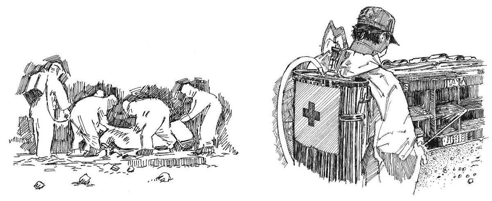

Overview
- Some diseases, including cholera (and other diarrhoeal diseases) and especially Ebola , Marburg fever, Lassa fever , and plague , remain infectious even after death.
- It is therefore essential to take extreme care when handling the bodies of individuals who have died from these diseases.
What you need to know
- The bodies of people who have died from certain diseases must be promptly and safely buried to protect others, because these diseases can spread through contact with bodies even after death.
- Specialists from the Ministry of Health or other organizations may be available to carry out such burials. If this is the case, you should continue health promotion and allow them to do their job.
- Burial of dead people is a sensitive issue in any community. You must be careful not to upset people; help them to understand why the person they love must be buried in a different way.
- Provide psychosocial support to the families of those who have died. (See Action tool 19).
Burying dead bodies can be a health hazard. If you have to do it, always ask for professional help and advice.
Remember that the main duty of the Red Cross and Red Crescent volunteers are to promote health in the community. You can make more difference in this way than in any other way.
Safe burial of dead bodies
- Talk to community leaders and seek their support for what you are doing.
- Respect traditions without compromising safety.
- Do not become directly involved if burials are being done by others. If you are asked to assist, make sure that you have been trained properly and understand the correct procedures for conducting a safe burial.
- Carry out all activities calmly and respectfully.
- Always take care, first and foremost, to protect yourself (see Action tool 5) and use personal protection equipment whenever it is required (see Action tool 6).
- Disinfect the room and destroy the belongings (clothes) of a person who has died of Ebola, Marburg fever, Lassa fever, or plague.

Safe burial of dead bodies. Disinfection.